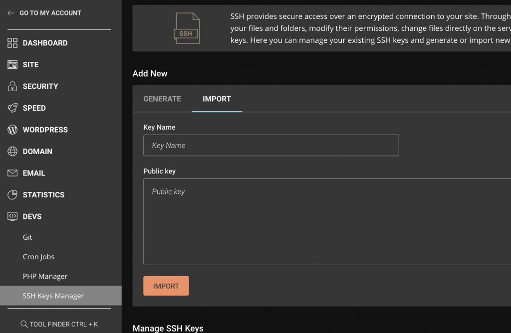

首先在本機端創一個New key
ssh-keygen -t rsa
Enter file in which to save the key (/Users/.ssh/id_rsa): 這裡可以打檔案名稱(ir_rsa_test)若空白則是預設id_rsa)
再來按Enter即可
複製剛剛創好的public key
貼到Siteground -> DEVS -> SSH Keys Manager->Import

完成面步驟即可
接下來到電腦上使用ssh來測試連接
ssh -i ~/.ssh/id_rsa siteground使用者名稱＠網站domain -p18765
使用者名稱在siteground創好key的地方點擊Actions->SSH Credentials 就可以看到